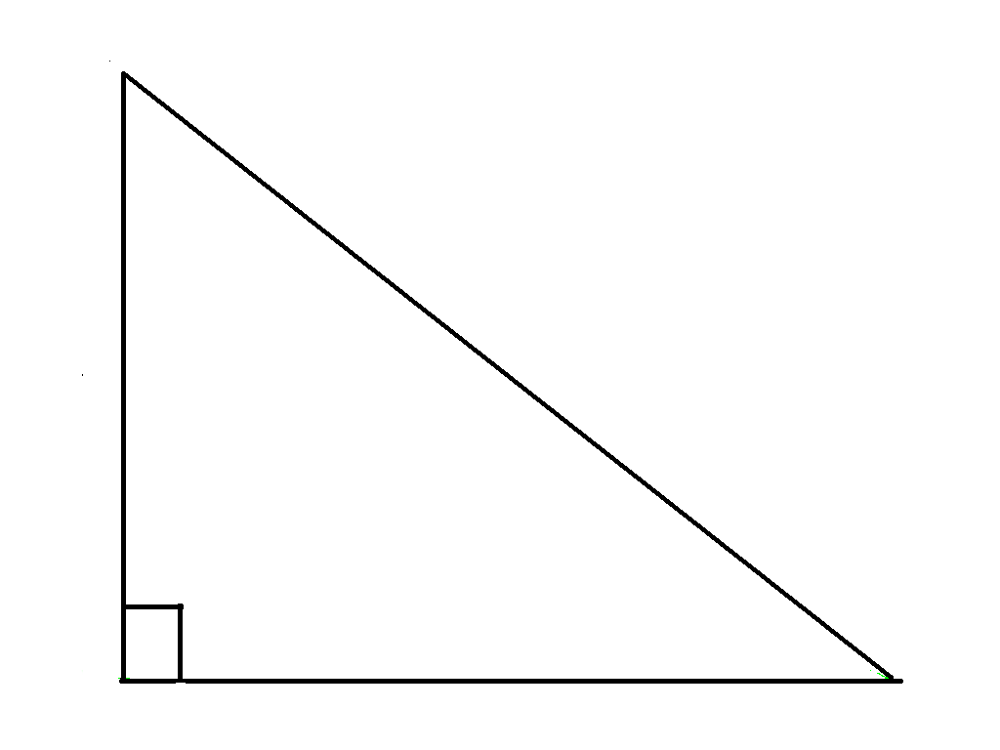
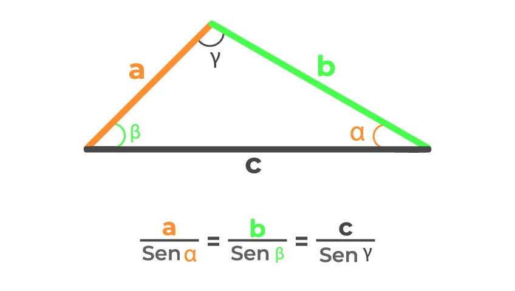
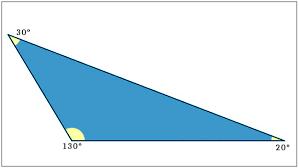

Em um triângulo retângulo: c² = a² + b²
A Lei dos Senos é uma relação matemática que afirma que, em qualquer triângulo, a razão entre um lado e o seno do ângulo oposto a ele é constante.
é um teorema matemático que relaciona os lados de um triângulo qualquer, permitindo calcular um lado desconhecido se soubermos os outros dois lados e o ângulo entre eles.
